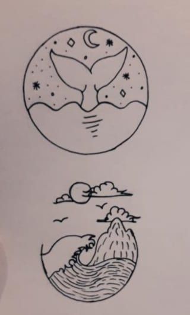

Home
About me
Contact me
Study
Танилцуулга-Миний тухай
Би аарцтай торт, пицца, жимс жимсгэнэд их дуртай. Тийм ч учраас гэртээ торт, пицца хийж иддэг.
Мөн би агаарын теннис, ширээний теннис тоглох бас усанд сэлэх дуртай. Гар бөмбөг бас сонирхдог.

Би чөлөөт цагаараа зураг зурах дуртай. Гэхдээ юмыг хараад яг дуурайж зурах нь илүү гоё байдаг.
Мөн байгалийн, юмсын зургийг дарах дуртай. Ингэж зураг дараад дараа харах нь гоё мэдрэмж төрүүлж баяртай болгодог.